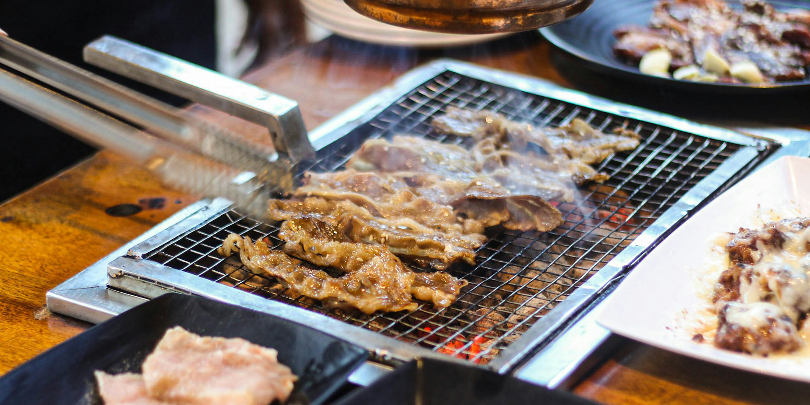

<!DOCTYPE html>
<html lang="en">
  <head>
    <meta charset="UTF-8">
    <title>Galbi - Korean Short Ribs</title>
  </head>
</html>

<h1>Navigation</h1>
<a href="../index.html">All Recipes</a>

<h1>Galbi - Korean Short Ribs</h1>



<h2>Overview</h2>
<p>This recipe is based on a few different galbi recipes online amalgamated into the essentials!</p>
<p>I have made this recipe a bunch of times, and found that varying the cooking method adds plenty of variety from pan to BBQ. I would love to try this on a charcoal grill in the summer. </p>
<p>A bonus tip for the amount required to feed folks: 30 people need 20lbs of ribs, 15lbs of chicken, 15lbs of beef skewers.</p>

<ul><strong><u>Ingredients</u></strong>
    <li>¾ cup soy sauce</li>
    <li>¾ cup water</li>
    <li>3 tablespoons white vinegar</li>
    <li>2 tablespoons sesame oil</li>
    <li>½ large onion, minced</li>
    <li>¼ cup minced garlic</li>
    <li>¼ cup dark brown sugar</li>
    <li>2 tablespoons white sugar</li>
    <li>1 tablespoon black pepper</li>
    <li>3 pounds Korean-style short ribs (beef chuck flanken, cut 1/3 inch)</li>
</ul>

<ol><strong><u>Instructions</u></strong>
    <li>Pour soy sauce, water, vinegar, and sesame oil into a large, non-metallic bowl. Whisk in onion, garlic, brown sugar, white sugar, and pepper until the sugars dissolve. Submerge the ribs in the marinade. Cover the bowl and refrigerate for 7 to 12 hours; the longer, the better.</li>
    <li>Preheat an outdoor grill for medium-high heat.</li>
    <li>Remove ribs from marinade and shake off excess; discard marinade.</li>
    <li>Cook on the preheated grill until the meat is no longer pink, 5 to 7 minutes per side.</li>
</ol>